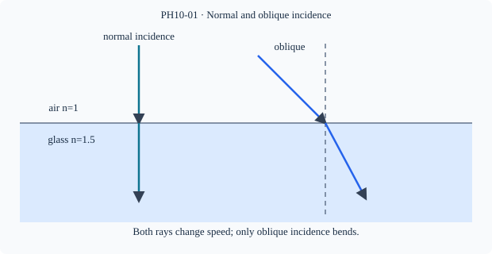

Prerequisite bridge
PH09-01
Before starting, identify the reference frame, directed rays, units and applicable geometric assumptions. Unbound prerequisites remain provisional.
Connected textbook foundation (preserved from PR #5)
1. When does a light ray change direction?
A straight straw partly immersed in water often appears bent at the surface. The straw itself is not bent. Light traveling from the immersed portion changes its direction where it crosses the water–air boundary, and the eye traces the incoming ray backward along its final direction. This is refraction: a change in propagation direction associated with a change of optical medium, except where the ray enters normally and continues along the normal.
Start every ray drawing with three things: the boundary between two materials, the normal at the point of incidence, and an arrow giving the direction of travel. Measuring an angle relative to the surface instead of the normal is a frequent source of false numerical answers.
A ray passing from air into ordinary glass generally bends toward the normal; from glass into air it generally bends away, for oblique rays satisfying refraction conditions. More exactly, the direction depends on relative refractive index, not a list of memorized “denser” labels.
Build and check the model
At a stationary boundary between isotropic transparent media, the light frequency remains fixed while propagation speed and wavelength change together (v=fλ). The boundary bends oblique rays because the direction must satisfy the interface phase condition; at normal incidence direction is unchanged even though speed and wavelength can change. Optical density means refractive index, not necessarily mass density. For ordinary media n=c/v.
Worked anchor
Light with vacuum wavelength 600 nm enters a medium n=1.5. Its speed is c/1.5=2.0×10⁸ m/s and wavelength 400 nm; frequency stays 5.0×10¹⁴ Hz. A ray entering normally has no change in direction.
Condition and limiting check
At a fixed interface, frequency continuity does not imply speed continuity. For dense-to-rare oblique incidence sufficiently large, a propagating transmitted ray may not exist (PH10-17 extension).
Misconception repair
Do not equate refraction solely with visible bending; a normally incident ray changes speed without changing direction.
Reasoning diagram

Self-check before transfer
A normally incident ray enters n=1.25 from air. What happens to speed, frequency, wavelength?
Check the reasoning
Speed becomes 0.8c, frequency stays fixed, wavelength is 0.8 of incident wavelength; no angular bending.
Source and figure status
Curriculum pointer CBSE10; candidate scope only. Preserved chapter manuscript. Original subtopic-specific figure attached. Scientific figure and teaching-sufficiency reviews remain HOLD.